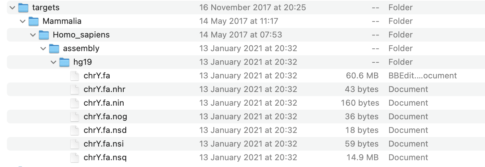
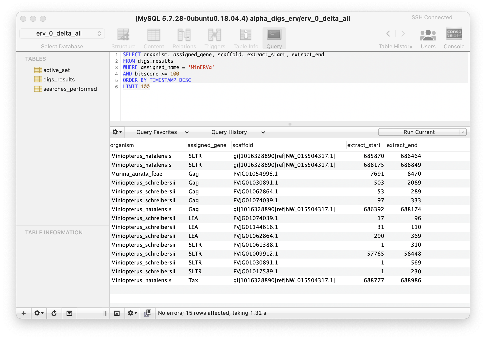
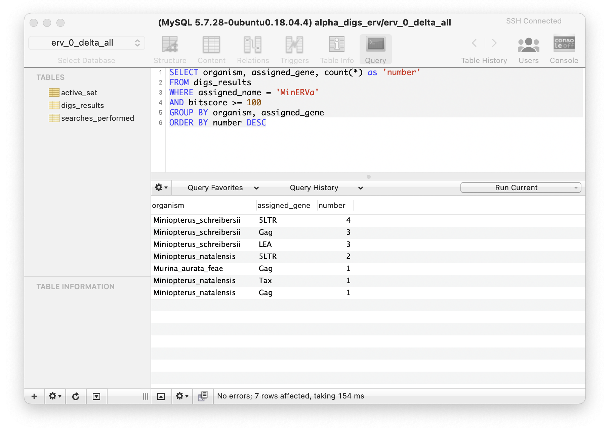

DIGS Tool: A User Guide
Contents
- Installation & Set-up
- Performing DIGS and working with project databases
- Running an in silico screen
- Investigating screening results via a GUI SQL client
- Updating reference sequences and reclassifying results
- Incorporating linked data into a DIGS project
- 'Consolidate': Merging hits in the DIGS results table into larger sequences.
- Extracting hit sequences and their flanks using the DIGS tool
1. Installation & Set-up
1.1. Software requirements
DIGS tool:
The latest version can be obtained by clicking the 'Download' button at the top of this page.
All software used within the DIGS framework can be installed on LINUX or UNIX systems.
Scripting language:
The DIGS tool requires PERL.
The DBI (database interface)
module should be installed via CPAN if it is not part of your native PERL distribution.
Similarity searches:
The DIGS tool uses the freely available
BLAST+
package to perform sequence similarity searches.
Relational database management system (RDBMS):
The DIGS tool uses the MySQL relational database management system.
MySQL Community Server
is a free-to-use, open source version of this program.
GUI client for relational database (optional):
To interface with DIGS project databases via a graphical user interface (GUI),
please install one of the many SQL client programs that are compatible with MySQL,
such as SequelPro.
1.2. Setting up your local environment for DIGS
The DIGS tool requires users to set four environment variables in their home environment:
| Name | Definition |
|---|---|
| $DIGS_GENOMES | Path to the top-level of the 'target-databases' directory (see below) |
| $DIGS_HOME | Path to the DIGS-Tool directory |
| $DIGS_MYSQL_USER | Your mysql user name |
| $DIGS_MYSQL_PASSWORD | Your mysql password |
Note that one of the environment variables is the path to the 'target-databases' directory. DIGS requires that all project-relevant sequence databases are contained within this directory, which has a simple, pre-defined subdirectory structure (see section 1.3 below).
Once environment variables have been set, you should be able to run the DIGS tool script with the -h (--help) option as shown here:
giff01r@Alpha:~/DIGS/DIGS-tool$ ./digs_tool.pl -h
This should print the DIGS input help page to the console:
### DIGS version 1.13.2
### usage: ./digs_tool.pl m=[option] -i=[control file] -h=[help]
### Main functions
-m=1 Prepare target files (index files for BLAST)
-m=2 Do DIGS
-m=3 Reassign loci
-m=4 Defragment loci
-m=5 Consolidate loci
### Summarising target databases
-g=1 Summarise targets (brief summary, by species)
-g=2 Summarise targets (long, by individual target file)
### Managing DIGS screening DBs
-d=1 Import tab-delimited data
-d=2 Flush core tables
-d=3 Drop tables
-d=4 Drop a screening DB
-d=5 Append data to 'digs_results' table
-d=6 Extract sequences using tabular file
Target path variable '$DIGS_GENOMES' is set to '/home2/db/digs_genomes'
1.3. Setting up target libraries
The DIGS tool is designed to perform systematic, similarity-search based screening of local DNA sequence 'databases' - in other words, collections of FASTA-formatted DNA sequence data.
Genome data should be stored in a directory tree with five subdirectory levels, as shown below.

To illustrate this another way - the figure below shows how a very simple target directory (in this example, it is only the Y chromosome of the human genome) might look on the (macintosh) desktop.

Table: Directory levels in the 'target databases' directory
| Level | Information |
|---|---|
| 1 | The top level directory - should be the path specified under the DIGS environment variable $DIGS_GENOMES. |
| 2 | Group - this level allows for categorisation of species or samples from which sequence data are derived, so as to facilitate data management. For example, if screening in a wide range of endothermic vertebrate species, we might have separate bird and mammal directories at this level. |
| 3 | Species or sample name - within the group directory, data are logically separated based on the provenance of sequence data. For example, genome data from distinct humans should be under a subdirectory named 'Homo_sapiens' or something equivalent. |
| 4 | Data type - name appropriately and (ideally) consistently (e.g. wgs, transcriptome) |
| 5 | Assembly version - FASTA data files should be in this directory |
Before we can use BLAST to screen target sequence databases, it is neccessary to 'index' these files for BLAST searching.
This can be performed efficiently by running the digs_tool.pl script as follows:
./digs_tool.pl –m=1
This will initiate a console-based interactive process in which the target database folder is scanned, and genomes that require indexing for BLAST are identified.
1.4. Creating project-specific sequence libraries
To perform DIGS we require a library of FASTA-formatted sequences, called the 'reference sequence library'.
The reference sequence library is used a source of 'probes' for screening, and also provides a means of classifying hits (i.e. similar sequences) identified in these screens.
The DIGS tool uses a simple rule to capture data from the headers of FASTA-formatted reference (and probe) sequences, in which everything to the left of the last underscore in the FASTA header is taken as the 'species name' and everything to the right is taken as the 'genome feature name'.

A subset of reference sequences should be selected as probes. The entire reference library can be used - in which case there is no need to create a separate file – but it is often sufficient to use only a subset of sequences from the reference sequence library, in which case, a separate file containing this subset should be created. The path to this file is specified in the DIGS control file.
1.5. Creating a project-specific control file
The DIGS control file is a text file that specifies parameters and paths for DIGS.
Control files are structured as NEXUS-style blocks bounded by BEGIN and ENDBLOCK statements as shown below.
Begin SCREENDB;
db_name=erv_lenti;
mysql_server=localhost;
ENDBLOCK;
BEGIN SCREENSETS;
query_aa_fasta=/home/rob/DIGS/projects/lenti-probes.DIGS.faa;
reference_aa_fasta=/home/rob/DIGS/projects/ERV-reference.DIGS.faa;
bitscore_min_tblastn=60;
consolidated_reference_aa_fasta=/home/rob/DIGS/projects/;
output_path=./tmp/;
seq_length_minimum=50;
defragment_range=10;
#query_na_fasta=/home/rob/DIGS/projects/lenti-probes.fna
#reference_na_fasta=/home/rob/DIGS/projects/lenti-probes.fna
#bitscore_min_blastn=30;
ENDBLOCK;
BEGIN TARGETS;
Mammalia/
ENDBLOCK;
Note that not all parameters will need to be defined for every screen.
Table: Parameters defined in the DIGS control file
| Parameter | Definition |
|---|---|
| db_name | Name of the project-specific screening database |
| mysql_server | name of the mysql_server to use (set to 'localhost' to use local database) |
| query_aa_fasta | Path to file with amino acid probe sequences |
| reference_aa_fasta | Path to file with amino acid reference sequences |
| query_na_fasta | Path to file with nucleic acid probe sequences |
| reference_na_fasta | Path to file with nucleic acid reference sequences |
| bitscore_min_tblastn | Minimum bit-score of tBLASTn hit to extract |
| bitscore_min_blastn | PMinimum bit-score of BLASTn hit to extract |
| seq_length_minimum | Minimum length of sequence to extract |
| defragment_range | Range within which two BLAST hits in the target sequence will be merged |
2. Performing DIGS and working with project databases
2.1. Running an in silico screen
Run the DIGS tool using the -m=2 option to start screening.
./digs_tool.pl -m=2 -i [path to your project control file]
e.g.
./digs_tool.pl -m=2 -i myControlFile.ctl
This will initiate the screening process. A progress log is reported to the screen:
Connecting to DB: eve_1_parvoviridae
Created report directory
Path: './tmp/result_set_38612_1618435290'
Probe sequences: 22 amino acid FASTA sequences
Reference library: 39902 amino acid sequences
Targets: 1866 target files
Previous queries: 41052 previous queries
Skipped in set: 41008 (of 41052)
Searches to run 44
### Starting database-integrated genome screening
tblastn: 1: 'Eurynorhynchus_pygmeus' (GCA_003697955, low_coverage)
target: 'GCA_003697955.1_ASM369795v1_genomic.fna'
probe: 'NC_001401-AAV2_NS'
# 2 matches to probe: NC_001401-AAV2, NS
# 0 matches above threshold (excluded: 0 < length; 2 < bitscore)
# done 1 of 44 queries (%2.27)
tblastn: 2: 'Hypophthalmichthys_nobilis' (HypNob1.0, low_coverage)
target: 'GCA_004193235.1_HypNob1.0_genomic.fna'
probe: 'NC_001401-AAV2_NS'
The first few lines of output report the properties of the probe, reference and target sequence libraries that compose the screen.
In addition, the status of the screen is reported - of all the individual BLAST searches that comprise the screen, how many have been performed, and how many are still outstanding.
Run with the -v (--verbose) option to see more detailed log output.
If screening is interrupted for any reason, simply restart the process. Screening will continue from the point at which the interruption occurred.
2.2. Investigating screening results using an SQL client
The relational database component allows efficient monitoring and summarising the output of screening. Particularly when the screening project database is enriched with additional data (e.g. taxonomic data, see below) this greatly enhances users capacity to interrogate the data generated by screening.
A MySQL client with a graphical user interface (e.g. SequelPro) can be used to connect to the screening database and select view the results of screening. For example, as shown below.

Visualising DIGS results: In the example shown above, an SQL statment is used to select sequences that matched to Miniopterus endogenous retrovirus (MinERVa) with a BLAST bitscore of at least 100. The 'ORDER BY' part of the SQL statement is used to sort the matching rows in order of the time they were entered into the results table (the TIMESTAMP field on each database table captures this information).
As well as selecting rows, it is often useful to count rows based using an SQL statement with a 'GROUP BY' clause, as shown in the example below.

Use of a 'GROUP BY' statement to count by category: In the example shown above, an SQL statment is used to select sequences that matched to Miniopterus endogenous retrovirus (MinERVa) with a BLAST bitscore of at least 100. The 'ORDER BY' part of the SQL statement is used to sort the matching rows in order of the time they were entered into the results table (the TIMESTAMP field on each database table captures this information).
2.3. Updating reference sequences and reclassifying results
Inspecting screening results often reveals the deficiencies of the reference sequence library that was used to classify screening results.
In particular, screening can make it clear that there are certain variants of the genome feature being investigated that are not represented in the reference sequence library.
When this happens it is useful to reclassify sequences identified via screening using an updated reference sequence library that includes representatives of the missing variant(s).
To do this, simply add the new sequences to your project-specific reference library and run the digs_tool.pl script using your project control file and the -m=3 option, as shown here:
./digs_tool.pl -m=3 -i ../projects/eve/erv_1_lenti.ctl
Connecting to DB: erv_lenti
Created report directory
Path: './tmp/result_set_33636_1618435124'
Reference library: 59 amino acid sequences
Enter a WHERE statement to limit reaasign (Optional) : WHERE assigned_name = 'RELIK'
The option to limit the reassign via a WHERE statement is presented. This can save time when the aim is to reassign only a subset of hits in a digs_results table with a large number of entries. If using a WHERE statement enter it as you would in a SQL client (i.e. using appropriate syntax), as shown above.